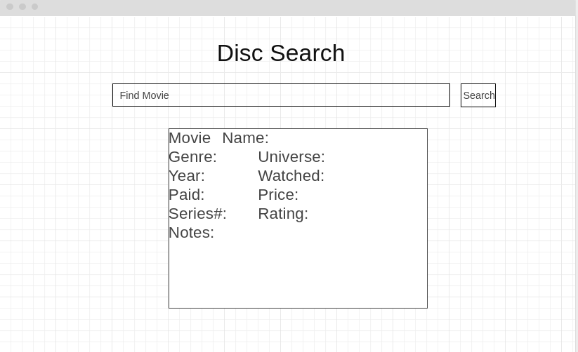

Overview
Purpose
The purpose is to take an organized excel sheet of a persons owned physical media and give it a nice front page to search and display. This can also be used as a template for other excel sheets so people can take it and tweak it to their own usecase
Audience
The person who owns this excel sheet
Dynamic elements
as you search and filiter what movies it shows from the data will change on the display
Branding
Website Logo
Style Guide
Color Palette
Palette URL: https://coolors.co/396e94-e7c24f-a43312-381d2a-aabd8c| Primary | Secondary | Accent 1 | Accent 2 |
|---|---|---|---|
| [#286340] | [#0f5f4d] | [#005a57] | [#0c555d] |
Pseudocode for your project
Html will be a basic body with the logo and text "Disc Search" on the top Then their will be a search bar and a search button under that will be the dynamic box showing each movie that fits the search someone puts which will be generated in java script and pulled from a json file
Wireframes
Create wireframes for your project page(s). One for each page and list them here.
